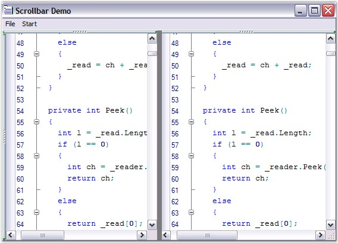

Edit Control offers extremely smooth scrolling behavior using idle-time processing and dynamic scroll area expansion techniques. The scrolling behavior is smooth even when large files are loaded, though the Edit Control scrolls by several hundred lines for a small movement of the scroller.
The scrollers in the Edit Control can be optionally shown / hidden by using the below given properties.
|
Edit Control Property |
Description |
|
ShowVerticalScroller |
Gets / sets value indicating whether the vertical scroller can be shown. |
|
ShowHorizontalScroller |
Gets / sets value indicating whether the horizontal scroller can be shown. |
|
AlwaysShowScrollers |
Gets / sets value indicating whether scrollers should be always visible. |
|
[C#]
// Display the Horizontal Scroller. this.editControl1.ShowHorizontalScroller = true;
// Display the Vertical Scroller. this.editControl1.ShowVerticalScroller = true;
this.editControl1.AlwaysShowScrollers = true; |
|
[VB.NET]
// Display the Horizontal Scroller. Me.editControl1.ShowHorizontalScroller = True
// Display the Vertical Scroller. Me.editControl1.ShowVerticalScroller = True
Me.editControl1.AlwaysShowScrollers = True |
The Edit Control supports scroller events that are raised when the scroll arrows are clicked. The scroller events are used to synchronize the scrolling of multiple Edit Controls.

Figure 51: Scrolling support in Edit Control
Scroll Bar Buttons
Buttons can be displayed at the top, bottom, left or right of the scroll bars by using the below given properties.
|
Edit Control Property |
Description |
|
ScrollbarBottomButtons |
Gets buttons at the bottom of vertical scrollbar. |
|
ScrollbarLeftButtons |
Gets buttons on the left of vertical scrollbar. |
|
ScrollbarRightButtons |
Gets buttons on the right of vertical scrollbar. |
|
ScrollbarTopButtons |
Gets buttons at the top of vertical scrollbar. |
|
[C#]
this.editControl1.ScrollbarBottomButtons.AddRange(new System.Windows.Forms.Control[] { this.scrollbarButton1 }); this.editControl1.ScrollbarLeftButtons.AddRange(new System.Windows.Forms.Control[] { this.scrollbarButton2 }); this.editControl1.ScrollbarRightButtons.AddRange(new System.Windows.Forms.Control[] { this.scrollbarButton3 }); this.editControl1.ScrollbarTopButtons.AddRange(new System.Windows.Forms.Control[] { this.scrollbarButton4 }); |
|
[VB.NET]
Me.editControl1.ScrollbarBottomButtons.AddRange(New System.Windows.Forms.Control() {Me.scrollbarButton1}) Me.editControl1.ScrollbarLeftButtons.AddRange(New System.Windows.Forms.Control() {Me.scrollbarButton2}) Me.editControl1.ScrollbarRightButtons.AddRange(New System.Windows.Forms.Control() {Me.scrollbarButton3}) Me.editControl1.ScrollbarTopButtons.AddRange(New System.Windows.Forms.Control() {Me.scrollbarButton4}) |
Scroll Position and Offsets
The scroll position and offsets of the Edit Control are set by using the below given properties.
|
Edit Control Property |
Description |
|
ScrollPosition |
Gets / sets scroll position of Edit Control. |
|
ScrollOffsetBottom |
Gets / sets the bottom scroll offset. |
|
ScrollOffsetLeft |
Gets / sets the left scroll offset. |
|
ScrollOffsetRight |
Gets / sets the right scroll offset. |
|
ScrollOffsetTop |
Gets / sets the top scroll offset. |
|
[C#]
this.editControl1.ScrollPosition = new Point(1, 5);
this.editControl1.ScrollOffsetBottom = 5; this.editControl1.ScrollOffsetLeft = 10; this.editControl1.ScrollOffsetTop = 5; this.editControl1.ScrollOffsetTop = 10; |
|
[VB.NET]
Me.editControl1.ScrollPosition = New Point(1, 5)
Me.editControl1.ScrollOffsetBottom = 5 Me.editControl1.ScrollOffsetLeft = 10 Me.editControl1.ScrollOffsetTop = 5 Me.editControl1.ScrollOffsetTop = 10 |
 Office 2007 Visual Style
Office 2007 Visual Style